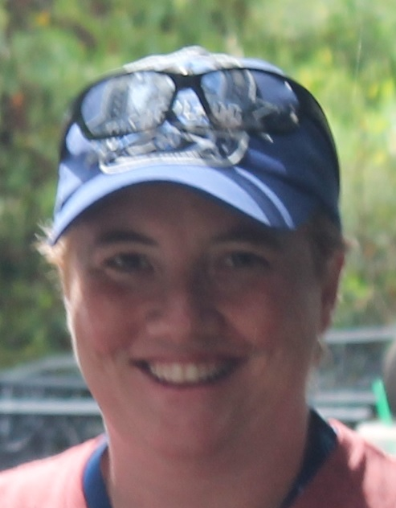

About Me

I have worked as a Computer Engineer/Software Developer and Manager for nearly 20 years. Most of those years
have been spent in C/C++ and C#.
I began my career at Motorola working on CDMA Base-stations for cellular communication running a High Availability
Platform. I developed upgrade software, which allowed the basestation to be upgraded with zero downtime.
I left Motorola in 2006 to work for General Dynamics. I developed POSIX device drivers and other platform
software for Software Defined Radios, such as JTRS HMS Handheld and Manpack Radios. I also lead a software
team of up to 50 software engineers to develop a platform which supported SATCOM, SINCGARS, SRW, MUOS and
WNW waveforms. After JTRS HMS started to wind down and go into maintenance, I started working on TIGRS software,
which was a field application for the military, which assisted with historic situational awareness by storing
event data including location. It also provided terrain mapping LOS and CLOS information.
I then left General Dynamics for Dell Software Group, which eventually turned into Quest Software and ultimately
become One Identity, LLC. Currently, my primary job is developing C# software for a product called Safeguard.
Safeguard is an appliance which stores and controls administrator credentials. It also records user sessions,
in order to prevent bad actors from divulging private company data. Think of someone recording Edward Snowden whilst
he was trying to steal NSA documents and that will give you an idea of the power of Safeguard.
I also recently started a part-time position, in addition to my full-time job at One Identity, LLC., as
a teaching assistant for a Full-Stack Development Coding Boot Camp with the University of Arizona.
I am still uncertain about my long term goals in the software/technology realm. I'd like to find something
inspiring to work on that can really make a different to people who are less-fortunate, either due to poverty
or illness, or both. I would also like to work for Walt Disney Imagineering some day.